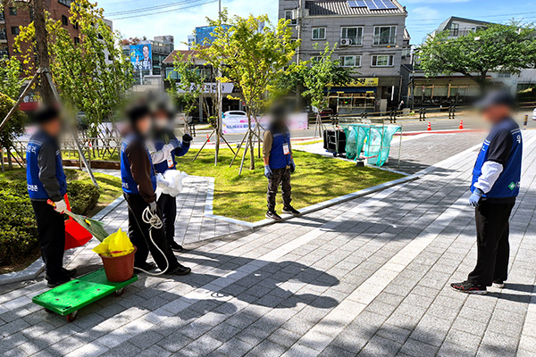

그린죤 미화원 파견
확인된 인원들만 선정하여 보냅니다
여성 친화일촌기업으로 인증 받은 그린죤은 환경 미화원 모집을 항상 적극적으로 모집하고 있습니다. 청소 경력을 가진 분들이라면 공고를 통해 입사 지원을 신청할 수 있으며, 처음 청소작업을 한다 하더라도 그린죤 아카데미 양성 교육을 통해 배워나가는 과정을 거치게 됩니다.

미화원 파견 지역
관공서, 병원, 사무실, 상가, 기업체, 행사 청소 등 정기적으로 청소 인원이 필요한 경우
아파트
사무실
상가
회사
관공서
창고

그린죤 미화원 작업 갤러리
업무 환경을 갤러리에서 확인할 수 있습니다.
그린죤 아카데미
완벽한 청소를 위한 인재를 양성합니다.
창업교육
직장인 기본교육
기존업체 향상교육
인성교육
미화원 교육
인재양성 교육

창업교육
경남을 넘어 전국으로 나아가고자 합니다.